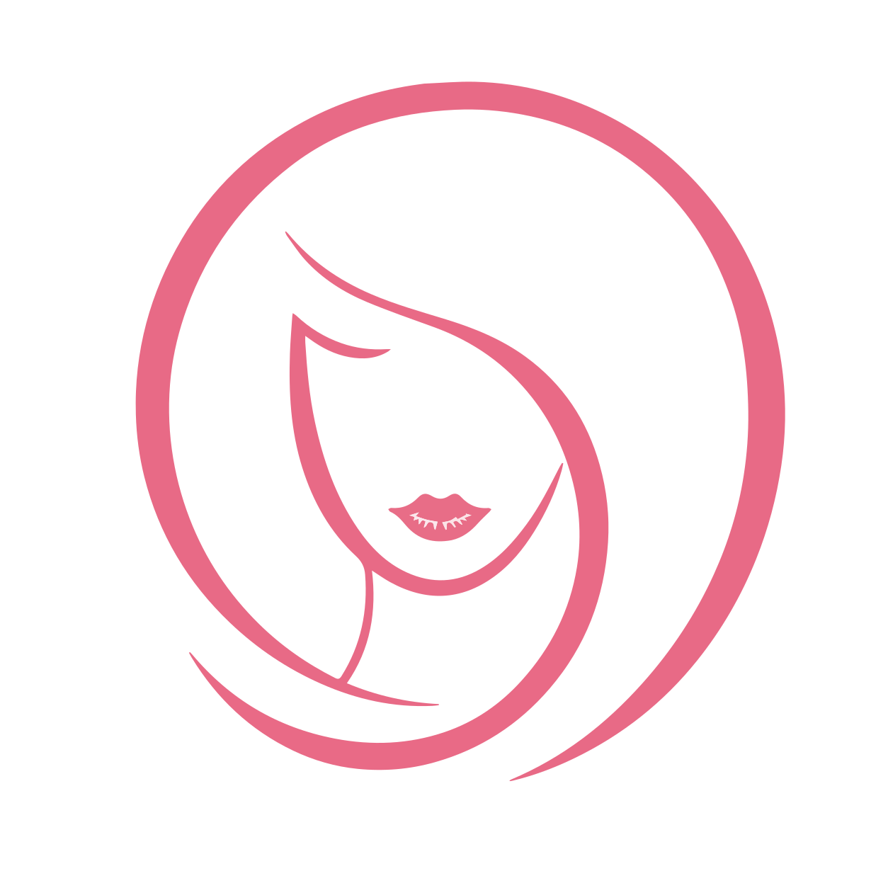

Perucas e Lace Wigs
Modelos femininos, masculinos, sintéticos e naturais com ajustes personalizados.

Especialista em Prótese Capilar e Mega Hair em Guarapuava
Somos especialistas em prótese capilar masculina e feminina, mega hair com fita adesiva, perucas, lace wigs, cabelos naturais e extensões. Atendimento acolhedor e resultados que transformam sua autoestima.

Autoimagem com leveza
Seja para cobrir falhas, ganhar volume ou mudar o visual, a Marli Bio Hair é a especialista em prótese capilar e mega hair em Guarapuava. Unimos técnica, acolhimento e produtos de qualidade para você se sentir bem.
Nossos produtos
Modelos femininos, masculinos, sintéticos e naturais com ajustes personalizados.

Acabamento discreto para disfarçar queda de cabelo com aparência natural. Especialista em prótese capilar.

Opções fixas ou removíveis, com texturas e volumes para pronta composição. Especialista em mega hair.

Itens de manutenção, armazenamento e cuidado para prolongar a vida útil da sua prótese ou mega hair.
Serviços especializados

Cortes, escovas, hidratações, coloração e finalização para sair com tudo pronto.
Consertos, restaurações, adaptações e modernizações conforme a peça.
Abordagem cuidadosa para dúvidas, queda temporária e necessidades crônicas.
Limpeza, ajuste de base, reposição de fios e revisão de fixação.
Blog da Marli Bio Hair
Rotina de limpeza, armazenamento e sinais de que está na hora de revisar.
Uma boa manutenção evita acúmulo de resíduos, preserva a base e mantém o visual natural por mais tempo.
Dica de especialista em prótese capilar:Após usar, guarde a peça seca em suporte arejado e agende revisão quando a fixação perder conforto.
Entenda diferenças de fixação, conforto, pele e frequência de troca.

A escolha depende da oleosidade da pele, tempo de uso desejado e sensibilidade da região de aplicação.
Dica de especialista em mega hair:Para uso diário, uma fita mais suave pode ser melhor; para longa duração, prefira maior aderência.
Comparativo simples para combinar orçamento, rotina e acabamento desejado.
A natural permite mais personalização; a sintética costuma ser prática, leve e com penteado estável.
Dica:Quem gosta de mudar finalização pode preferir cabelo natural; quem busca praticidade pode ir de sintética.
F.A.Q
Respostas rápidas para quem está pensando em usar prótese capilar masculina, feminina ou mega hair.
A prótese capilar é uma solução não cirúrgica para cobrir falhas ou queda de cabelo. A peça pode ser feita com acabamento natural e adaptada ao estilo, cor, volume e necessidade de cada pessoa. A Marli Bio Hair é especialista em prótese capilar em Guarapuava.
Mega hair são extensões de cabelo aplicadas para dar volume e comprimento. Prótese capilar é uma peça que cobre áreas com falhas ou calvície. Ambos os serviços são oferecidos pela Marli Bio Hair, que é especialista em mega hair e prótese capilar.
Depende do modelo e da forma de fixação. Em alguns casos, raspar uma pequena área melhora a aderência. Em outros, é possível usar métodos que preservam os fios existentes.
Sim, quando a peça está bem ajustada e a manutenção está em dia. A rotina de lavagem, secagem e cuidados deve seguir a orientação profissional para preservar a base, os fios e a fixação.
A durabilidade varia conforme o tipo de base, qualidade dos fios, frequência de uso e cuidados em casa. Manutenções periódicas ajudam a manter o visual bonito e confortável por mais tempo.
Com os cuidados adequados, o mega hair com fita adesiva pode durar de 4 a 8 semanas. A manutenção periódica é essencial para preservar a fixação e a qualidade dos fios.
Sim, quando cor, textura, densidade, corte e acabamento são bem escolhidos. A naturalidade também depende da aplicação e da manutenção correta. A Marli Bio Hair é especialista em prótese capilar e garante resultados naturais.
O melhor modelo depende da área a ser coberta, rotina, tipo de fio, sensibilidade da pele e resultado desejado. Uma avaliação com a especialista em prótese capilar e mega hair ajuda a indicar a peça e a fixação mais confortáveis para cada caso.
Do Instagram
Ver Reel: Loiro
Ver Reel: Manutenção prótese masculina
Ver Reel: Mega na fita adesiva
Atendimento direto